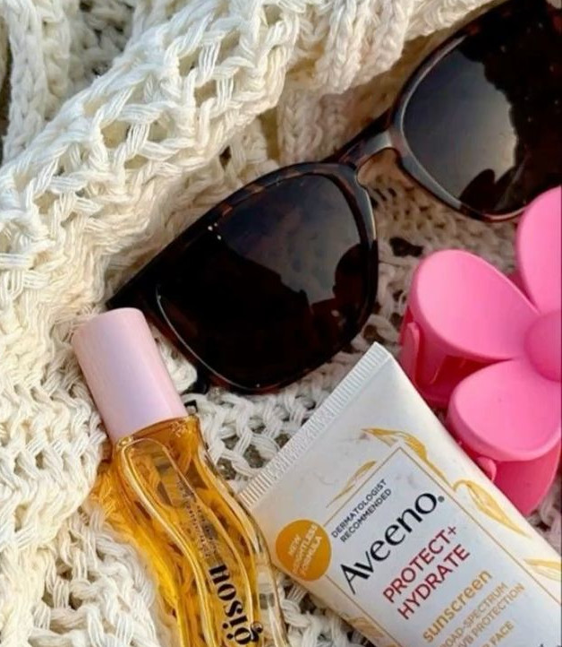

@nome_do_usuário
xx/xx/xxxx
Dia na praia
Dia perfeito de praia! 🏖️
Oi, galera! Acabei de voltar de um dia incrível na praia e não podia deixar de compartilhar com vocês!
Acordei super cedo, aquele céu lindo já anunciando que o dia ia ser especial. Peguei minha canga favorita, um chapéu mega estiloso e, claro, meu protetor solar! Cheguei na areia e o cheiro do mar já me fez sentir em paz. A água estava geladinha, mas a sensação de mergulhar e sentir as ondas me levando foi indescritível.
Passei horas lá, curtindo o sol (com bastante proteção, porque ninguém merece a dor de uma queimadura, né? 🙈). Fiz algumas fotos lindas e me senti super conectada com a natureza. Depois, aproveitei para caminhar pela beira da água e colecionar conchinhas. Ah, e ainda rolou aquele açaí delicioso com granola no final da tarde.
Nada como esse contato com o mar para renovar as energias e me lembrar da importância de aproveitar os pequenos momentos. Já estou com saudade do barulho das ondas e do clima tranquilo que só a praia tem!
Últimas postagens
Com as besties S2
Hoje nós fomos ao parque da festa da cidade

Caramela!! ❤️
Ela é tão fofaaaa!!! Amo ela :p
Euuuu
Fotinha que a best tirou